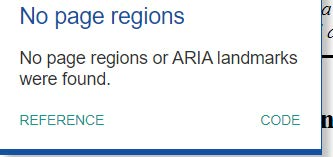

" - give page elements a role and sub-elements a label for easier navigation with a screen reader or other AT.

This project was conducted on a fake college website in order to evaluate accessibility criteria. The analysis was done by myself and checked against WCAG 2.0 Guidelines. I thought that this assignment was interesting and it made me realize how much goes into accessible technology creation and the thought behind why certain programs are or are not accessible. There is a lot that goes into creating accessible technology, but it is not that much of a hassle to design with accessibility in mind.
Website Information Name: IUPUI School of Informatics I590 Example Website Purpose: As a training resource for Info-I590 students to practice assessing accessibility. URL: https://balm.soic.iupui.edu/h590/index.html
Interpretative Summary This website appears to be close to meeting the WCAG 2.0 Level A accessibility requirements. There are some intermediate and novice-level accessibility issues that require attention including page navigation and closed captions for media content. Accessibility features in which this site is strong include readability, minimalism, and content clarity. The recommended priorities for addressing existing usability issues moving forward are that the landing page be amended first, followed by other pages in no set order for smaller fixes and streamlining. The suggested changes are outlined more clearly below as they relate to each web accessibility issue.
Problem #1 – No Landmarks Description: Skip links allow users to instantly navigate to sections of content on a page using different links. ARIA landmark roles are given to specific page elements that are similar to skip links but instead provide a more in-depth structure to a page or website. Impact: Landmarks help sighted and visually impaired keyboard-only users navigate page sections. Individuals that use screen readers or other assistive devices may have trouble navigating through page content or understanding their location on the website without having more guidance. Relevant WCAG 2.1 Guidelines: • Guideline 2.4 Navigable - 2.4.1 Bypass Blocks – Level A Recommendations: Code landmarks into the landing page and sub-pages to make content easier to navigate through. Example: "